systems / advanced
DeepSeek Elastic Compute (DSec)：面向大规模高效智能体训练的沙箱基础设施
DeepSeek Elastic Compute (DSec): A Sandbox Infrastructure for Effective Agentic Training at Scale
2026 · arXiv:2609.22978 [cs.DC]
目录
摘要
基于大语言模型（LLM）的大规模智能体训练与评估，依赖隔离的、有状态的执行环境；模型在其中检查代码仓库、调用工具、执行命令，并与任务特定的服务交互。这类工作负载以大规模突发的方式创建沙箱，跨越异构的功能与隔离需求，在长时间交互中保留状态，并且从复用率有限的大规模镜像语料库中取用镜像。因此，支撑它们需要一个弹性的执行平台，而非单一的沙箱运行时。
本报告介绍 DeepSeek Elastic Compute（DSec），一个生产级沙箱平台。它通过统一的 SDK 对外提供 FnCall、容器、microVM 与完整 VM 四类沙箱后端。DSec 在集群范围内协调放置与生命周期管理，用独立版本化的层来组合环境，结合内存共享、内存回收与 CPU 调度以支撑高密度执行，并从集群级分布式文件系统 Fire-Flyer File System（3FS）按需加载镜像数据。DSec 与强化学习（RL）框架协同设计，将带状态的 rollout 执行与可被抢占的 GPU 训练解耦，把沙箱生命周期与训练过程协同起来，在回收空闲资源的同时保留 rollout 状态，并缓解奖励劫持（reward hacking）等智能体不当行为。
单个生产规模的 DSec 单元覆盖约 160 个节点，每天服务约 300 万个沙箱；在生产中，它支撑超过 380,000 个并发沙箱，并维持每秒超过 5,000 次的沙箱创建速率。我们的评估与部署经验表明，这些机制降低了环境搭建与镜像分发的开销，提升了内存效率，并在高密度超卖下保住了对延迟敏感的性能。
1. 引言
近期前沿 LLM 的进展使智能体工作流变得实用并被广泛采用（Guo et al., 2025; Jimenez et al., 2024; OpenAI et al., 2024）。智能体模型不再输出单一的文本答案，而是与执行环境交互：它可能浏览代码库、调用工具、执行命令、检查失败原因、修改文件，或者在 computer-use 任务中通过图形界面操作浏览器与桌面应用（Xie et al., 2024; Zhou et al., 2024）。在这类负载中，模型基于反馈反复迭代，直到任务被解决。这种执行模式催生了不断壮大的智能体工具与编排框架生态，例如 DeepSeek Harness（DSH）（Shi et al., 2026）、OpenCode（Anomaly, 2025）以及多智能体训练框架。训练可靠的智能体需要大规模的强化学习（RL）：模型通过与真实的、隔离的执行环境交互来学习，而不仅仅依赖静态的输入—输出样例。
智能体训练流水线涵盖环境与数据构建、RL rollout、奖励计算、策略更新以及周期性评估。在这些阶段中，RL rollout 与评估对沙箱平台造成的压力最大，因为它们是大规模并发的，且与训练循环紧密耦合。在 RL 中（Guo et al., 2025; Ouyang et al., 2022），训练以一个包含三个阶段的反馈循环推进。第一，在 rollout 阶段，当前模型与沙箱化环境交互：读取文件、发起工具调用、执行命令、观察输出，并为每个任务产生一条轨迹。第二，在奖励计算阶段，框架使用原生的执行信号对轨迹打分，例如退出码、标准输出、测试通过率或任务特定的校验器。第三，在策略更新阶段，RL 算法根据收集到的轨迹与奖励更新模型参数。周期性评估遵循类似的执行路径，区别在于产生的轨迹用于衡量模型能力而非更新参数。近期系统进一步通过异步 rollout 将生成与策略优化流水化，持续补充已完成的样本以维持高并发并缓解长尾拖累（DeepSeek-AI, 2026）。对于智能体负载，这种设计使大量有状态的沙箱会话同时在飞行中，并可能在策略更新或调度器抢占时中断并恢复相关 rollout，从而进一步提高平台在并发、生命周期管理与状态一致性方面的要求。
对于每个 rollout 或评估任务，平台必须物化出一个隔离的、任务特定的环境，包括其代码仓库、依赖、服务、评估脚本与编程框架（harness）。该环境必须足够接近真实机器，以运行未经修改的软件栈、包管理器、构建工具、浏览器、模拟器与任务特定服务。因此，一个健壮、高吞吐的沙箱运行时是获得准确、可验证的 RL 与评估结果的基础。
智能体沙箱负载有若干特性，它们塑造了平台的设计：
（1）Rollout 与评估作业以突发方式创建沙箱。 单个作业可能请求多达 32K 个沙箱实例，因此平台必须能并发接受并放置大量沙箱。这类突发使水平可扩展性成为系统级要求，并要求调度、镜像分发等共享服务避免集中式瓶颈。
（2）沙箱必须以高密度运行。 在智能体交互期间，沙箱常常等待 LLM 生成下一个动作，因此 CPU 使用是稀疏的，天然适合超卖。例如在生产中，这允许单个节点承载多达 800 个 microVM 或 3,200 个容器——但前提是平台能够安全地超卖资源，并在节点规模上管理生命周期压力。
（3）智能体沙箱是有状态且长生命周期的。 模型可能修改文件、安装依赖、启动服务，后续的工具调用依赖这些累积的状态。由于一个沙箱可以在多轮 LLM 交互之间持续存活，内存占用、guest 页缓存、host 页缓存与可写状态可能在 CPU 早已空闲之后仍长期驻留。在高密度超卖下，这些常驻成本直接限制集群容量，因此内存共享与回收成为重要的平台需求。
（4）智能体负载高度异构。 平台必须覆盖类 OJ 的脚本执行、面向完整代码仓库的软件工程任务、安全任务、computer-use 负载、移动开发环境（例如 Android）以及其他整机环境。这些负载在 CPU 与内存需求、依赖足迹、所需系统功能与隔离强度上差异巨大。单一沙箱抽象无法高效覆盖全部。例如，轻量函数调用更适合短的、无状态的任务，而虚拟机（VM）更适合需要完整商用现成操作系统的负载。
（5）即便在同一负载类别内，环境多样性也很高。 训练与评估语料包含许多任务，每个任务可能需要自己的代码仓库、依赖版本、服务、工具包、评估脚本或 VM 快照。因此，平台必须服务大量互不相同的镜像与环境产物，而其中许多的复用率很低。在突发启动时，从镜像仓库拉取这些多样化任务镜像会把负载集中到分发路径上，抬高启动延迟，并引入额外 I/O 干扰已在运行的沙箱。在我们的消融实验中，预先急切拉取镜像使完成时间拉长了 1.7×，而按需加载将累计磁盘写入减少了 57%。
（6）智能体执行是不可信的。 智能体可能破坏文件系统、耗尽资源或干扰系统组件，进而扰乱 rollout 或其他同节点负载。因此平台需要细粒度的访问控制与不当行为分析，以遏制并诊断智能体引发的故障。
（7）智能体执行是可中断的。 GPU 训练作业可能在长时间 rollout 仍在进行时被抢占。因此平台必须保留执行状态，并支持跨中断的高效恢复。
这些特性界定了智能体沙箱平台的职责。DSec 提供了弹性服务伸缩、高密度资源管理、内存共享与回收、面向不同负载类别的多种隔离机制、可扩展的镜像分发，以及与训练框架的显式集成，从而实现抢占安全恢复、任务特定的网络策略与智能体不当行为缓解。
本报告余下部分从平台抽象到实现与评估介绍 DSec。§2 从用户视角介绍 DSec，包括支持的负载、沙箱后端与运行规模。§3 描述端到端平台架构。§4 刻画生产负载及其带来的平台挑战。§5 给出环境组合、镜像分发与高密度资源管理的核心系统机制。§6 描述与 RL 框架的协同设计，涉及环境构建、状态保留、跨抢占的资源回收，以及对智能体不当行为的分析与针对性访问控制缓解。§7 汇总其他实现细节。§8 评估设计的有效性，§9 讨论相关工作。
2. DSec 概览
本章介绍 DSec 面向用户的视图。从平台视角看，用户是代表研究人员调用软件开发工具包（SDK）的训练框架、评估框架与数据构建流水线；在本报告中我们统一称它们为用户。本章涵盖 SDK 入口、平台对外提供的沙箱后端及其服务的负载类别、沙箱会话的生命周期，以及生产部署的运行规模。
2.1 SDK 入口
用户通过 libdsec 访问 DSec，这是一个面向沙箱服务的 Python 客户端库。libdsec 为用户提供统一的 SDK 入口来创建与操作沙箱，但仍要求用户选择适合任务的沙箱后端。一个典型请求需指定沙箱类型、镜像或环境标识、CPU 与内存上限、生命周期设置、网络规则以及初始用户上下文。创建之后，用户可以执行 shell 命令或工具调用，并收集命令输出与返回状态。代码清单 1 展示了一个最小的容器会话：客户端连接服务端点，请求一个具有所需资源与网络策略的沙箱，运行一条命令，然后释放它。
代码清单 1｜通过 libdsec 的最小沙箱会话。
client = DSecClient()
await client.open()
args = DSecContainerRunArgs(
container_image="registry.../sphinx-9658:official",
memory_limit_mb=4096, cpu_cores_limit=4,
ttl_running_stop=300, # 空闲超时
network_rules={"npm": False, "pypi": True},
init_user="root",
)
sandbox = await client.run_container(args, timeout=120)
result = await sandbox.run_shell("echo hello world")
await sandbox.stop()
在这个例子中，网络规则允许访问 PyPI（pypi=True）但拒绝访问 NPM（npm=False）。这种细粒度网络控制将在 §6 详细讨论。该接口刻意不做到对所有后端的完整语义抽象。函数调用、容器、microVM 与完整 VM 在启动成本、隔离边界、文件系统语义与操作系统能力上各不相同。libdsec 提供统一的访问路径与相似的操作模型，但调用方仍需负责选择与负载相匹配的后端。
2.2 沙箱后端
沙箱运行时面临一个根本性张力：更强的隔离与更完整的系统功能，通常伴随更高的启动延迟与资源开销。由于没有任何单一沙箱抽象能适配所有智能体任务，DSec 支持多个后端以覆盖这一权衡空间。表 1 汇总了它们的典型适配场景。
FnCall 面向短的、无状态的任务，例如 OJ 负载、代码编译、无服务器程序、GPU kernel 与工具类代码。FnCall 任务运行在可复用的、预先创建的 CPU 或 GPU 容器中，避免每次调用都要做供给开销。对于 GPU 负载，FnCall 支持（i）共享模式，多个容器共享一个 GPU 实例，为轻量负载最大化利用率；（ii）独占模式，一个容器在其生命周期内保留一个 GPU 实例，用于性能敏感的任务（例如算子评估）。
容器是软件工程与通用工具使用负载的主力后端。它们启动快、装载密度高，且能运行大多数仓库级任务所使用的 Linux 软件栈。其主要局限是共享宿主内核，对安全敏感的任务并不总是合适。
Firecracker microVM（Agache et al., 2020）在保持 Linux 兼容性的同时提供更强的隔离边界。它们适用于安全敏感任务、更强的租户隔离，以及需要 VM 级边界又要 Linux 兼容性的负载。代价是比容器更高的内存开销与更慢的启动。
完整 VM 后端覆盖需要完整商用现成操作系统环境（COTS OS）的负载，例如通过 QEMU（Bellard, 2005）运行的 Android VM，以及需要 GUI 或图形渲染的负载。这类后端资源开销最高，但对于依赖 OS 专有 API、移动端运行时行为或整机执行的任务是必需的。
在生产中，容器与 microVM 在实例数量与资源消耗上都占主导。FnCall 以少量常驻环境服务大量轻量调用，而完整 VM 后端覆盖专门但重要的负载类别。
表 1｜DSec 各沙箱后端的典型负载适配。
| 特性 | FnCall | Container | MicroVM | Full VM |
|---|---|---|---|---|
| 运行时性能 | 最高 | 高 | 中 | 最低 |
| 依赖足迹 | 最低 | 低 | 中 | 高 |
| 隔离等级 | 最低 | 低 | 高 | 最高 |
| 完整 OS 功能 | 最低 | 中 | 高 | 最高 |
| 资源开销 | 最低 | 低 | 中 | 最高 |
| 场景 | 类 OJ 任务、GPU kernel 执行 | 软件工程、工具使用 | 安全、computer use | 商用 OS、图形 |
注：表中"更高"表示该项需求更高。
2.3 用户可见的生命周期
尽管所支持的后端内部差异很大，用户看到的是统一的高层生命周期。首先，调用方通过选择后端并指定环境产物、资源上限、生命周期策略与网络策略来创建沙箱。环境产物随后端与负载而异。对于容器与 microVM，它是一个基础镜像加上任务特定的工作区层与工具包层，平台将它们组合成运行环境。对于完整 VM 负载，它是一个准备好的 VM 镜像或快照。对于 FnCall，它是一个任务规格，包含任务类型、依赖文件以及要运行的代码或脚本。这些产物构成了本报告后续讨论的环境组合与镜像分发机制的基础。其次，平台准备环境并使其进入可交互状态。第三，用户发出命令或工具调用，观察输出，并运行任务特定的检查或测试。沙箱在其整个生命周期内都是有状态的：文件编辑、已安装依赖与已启动服务在多次调用之间持续存在，因此后续命令能看到先前命令的效果。由于沙箱在许多交互轮次间持续存活、而其 CPU 常常在轮次之间空闲，它的常驻状态在最后一条命令之后很久仍被钉住——这是 §4 中刻画的高密度挑战之一。最后，沙箱被显式停止，或在存活时间（TTL）到期后被回收，以免空闲或被遗弃的会话无限期占用资源。
2.4 部署规模
DSec 部署在多个规模单元（scale unit）上，它们共享同一套 3FS（DeepSeek-AI）分布式文件系统部署，用于存放基础镜像与工作区存储。在单个规模单元内，平台覆盖近 160 个 CPU 节点，共 30K 核、约 250 TB DRAM。它管理着数 PB 级别的层与镜像。在典型的一天中，单个规模单元服务约 300 万个沙箱实例，峰值并发达到约 380K，创建速率超过每秒 5,000 个实例。
这些数字对于理解本报告余下内容很重要。DSec 不是一个单一的沙箱运行时，也不是对容器的薄封装。它是一个生产级执行平台，必须把面向用户的沙箱抽象、后端特定的运行时、可扩展的镜像存储、高密度资源管理与训练框架集成结合在一起。
3. 平台架构
§2 从用户视角介绍了 DSec：一个 SDK、一组沙箱后端与一个会话生命周期。本章转向该接口背后的平台，描述一个请求如何从 SDK 到达运行中的沙箱、途经哪些组件。我们按集群级服务与沙箱运行时来组织架构描述。集群级服务提供请求入口、身份与访问管理、沙箱放置，以及集群健康与负载视图。沙箱运行时负责节点本地准入、沙箱创建、执行与资源回收，并依赖 3FS 提供镜像数据。
3.1 概览
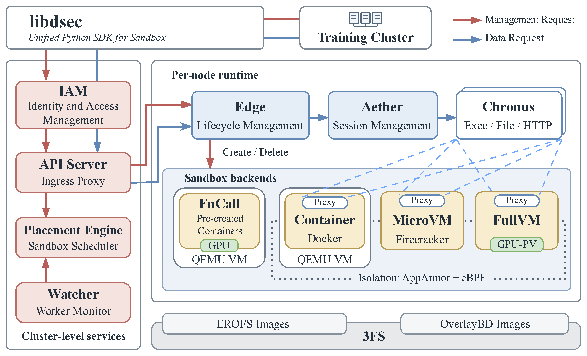
图 1｜DSec 架构。 每个代理中介容器或 VM 沙箱与平台其余部分之间的通信。FnCall 遵循独立的执行路径，不使用该代理。
图中要素：
libdsec（统一 Python SDK）与训练集群相连；集群级服务自下而上为 Watcher（Worker Monitor）→ Placement Engine（Sandbox Scheduler）→ API Server（Ingress Proxy）→ IAM（Identity and Access Management）；节点侧 Per-node runtime 为 Edge（生命周期管理）→ Aether（会话管理）→ Chronus（Exec / File / HTTP）；沙箱后端包括 FnCall（预创建容器，CPU/GPU，运行于 QEMU VM）、Container（Docker，运行于 QEMU VM）、MicroVM（Firecracker）、FullVM（QEMU VM，GPU-PV），隔离由 AppArmor + eBPF 提供；镜像层为 EROFS 与 OverlayBD，底层为 3FS。图中红色箭头表示管理请求，蓝色箭头表示数据请求。
在高层次上，沙箱创建请求首先发送到 IAM 进行认证与鉴权。一旦通过鉴权，请求进入放置引擎（placement engine），后者利用 watcher 收集的健康与负载信息选择一个目标节点。放置完成后，apiserver 将请求转发给该节点上的 edge。edge 随后检查本地容量，在容量允许时用所请求的后端创建沙箱，否则拒绝该请求。沙箱所需的镜像数据存放在 3FS 中，在启动与执行期间按需获取。容器、microVM 与完整 VM 沙箱会运行一个每沙箱的代理（aether）以及一个或多个 chronus 实例，用于命令执行、文件系统访问与其他运行时操作。这类沙箱启动之后，其操作经由 apiserver、edge、aether 与 chronus 路由。相比之下，FnCall 既不使用 aether 也不使用 chronus，走独立的请求路径：提交的任务直接在预创建容器中执行，随后对任务状态做尽力而为的清理。
3.2 集群级服务
集群级服务管理平台的访问，并在计算节点之间协调沙箱请求。它们包括 IAM、apiserver、放置引擎与 watcher。
IAM。 身份与访问管理（IAM）对调用方进行认证，并对发往 DSec 的所有管理请求进行鉴权。例如，创建或删除沙箱、修改用户的资源或并发上限等请求，必须在执行前通过 IAM 检查。主体（principal）是与管理请求关联的用户或服务身份。IAM 使用项目（project）来定义资源管理与访问控制的范围。在一个项目内，访问策略规定哪些主体可以对其资源执行哪些管理操作，而资源配额限制资源消耗。
我们支持多级项目嵌套，而非云平台中常见的扁平或两级层级。被授权的主体——包括智能体与 harness——可以创建子项目、委派父项目的一部分配额，并在子项目内授予管理权限。委派受父项目约束：主体不能授予自己并不拥有的权限，子项目的策略与配额也不能超过父项目的访问控制或资源上限。人类与智能体使用同一套管理 API 与授权模型。
API Server。 apiserver 是沙箱集群的入口代理。训练与评估代码从受信任的 GPU 服务器调用 libdsec，而沙箱执行的是不可信的、由模型生成的代码，且可能访问外部网络。因此两侧在网络上隔离，apiserver 是唯一被允许的通信路径。所有沙箱请求，包括创建、命令执行与流式 I/O，都经过这个入口。apiserver 不维护任何每沙箱状态。它定期从 watcher 刷新 edge 节点集合，而每个沙箱 ID 都编码了其所属的 edge。因此任何 apiserver 实例都能解析请求并直接转发到目标 edge，使入口层可以水平扩展。
放置引擎。 放置引擎为每个新沙箱选择宿主节点。放置分两个阶段进行：过滤与排序。过滤阶段只保留健康的、且提供请求所需后端与硬件能力的节点。例如，一个需要 GPU 的沙箱请求会被限制在配备所需 GPU 的节点上。排序阶段随机采样少量合格节点，并选择其中负载最低者。
Watcher。 放置引擎的决策质量取决于它对整个集群的视图，而该视图由 watcher 提供。watcher 定期探测每个 edge 与主机的健康状况，并收集与调度相关的状态，例如按后端类型统计的运行中沙箱数量，并按 edge、按用户、按任务细分。放置引擎定期从 watcher 拉取这些状态，并在评估新的创建请求时使用最新的视图。
请注意，放置引擎与 watcher 都不需要持久状态。放置引擎不保存任何沙箱执行状态，watcher 在重启后可以通过重新轮询各 edge 重建其集群视图。这使得放置引擎与 watcher 实例易于增加或替换，而无需昂贵的恢复步骤。
3.3 沙箱运行时
沙箱运行时创建并操作单个沙箱、管理其资源。它包括 edge、aether 与 chronus，并依赖 3FS 提供共享镜像存储。
Edge。 每个节点运行一个 edge，这是一个每机器组件，处理来自 apiserver 的、面向容器、microVM、基于 QEMU 的完整 VM 与 FnCall 后端的创建请求。在接受创建请求之前，edge 检查节点当前容量，容量不足则拒绝请求。这个节点本地准入检查补充了放置引擎基于周期性刷新的集群状态所做的放置决策。创建期间，edge 供给存储、应用基于 eBPF 的网络策略并启动运行时。
FnCall 与容器运行在 QEMU/libvirt VM 内，而非直接运行在宿主之上。该 VM 提供隔离的内核与网络栈，并作为不可信容器与裸金属之间的额外安全边界。为更好地支持图形密集型负载，例如 computer-use 的 GUI 应用、浏览器、视频游戏与 3D 渲染，我们利用宿主 hypervisor 的半虚拟化 GPU 接口（例如 virtio-gpu）。在完整 VM 内，我们既支持图形 API 与宿主 OS 原生兼容的负载，也支持其渲染栈可通过兼容层（如 DXVK（DXVK, 2018））翻译为宿主原生 API 的负载。
除跟踪沙箱生命周期之外，edge 还协调磁盘与内存快照，并在沙箱停止或 TTL 到期时释放节点本地资源。
Aether。 容器与 VM 沙箱会运行 aether，这是一个跨平台代理，负责与 edge 建立通信通道。该 edge 到 aether 的通道使用平台特定的传输方式，例如 Linux 容器使用 Unix 域套接字，VM 后端使用 vsock。edge 通过该通道监控沙箱健康，若通道关闭则将沙箱标记为失败。对于每个操作，aether 使用该操作的终端会话标识符来创建或定位对应的 chronus 实例，然后通过本地通道转发该操作。会话结束时，aether 终止对应的 chronus 进程树。
Chronus。 chronus 在沙箱内提供 shell 会话抽象，每个实例代表一个独立的 shell 会话。它对外暴露用于命令执行、文件系统操作、HTTP 请求与流式 I/O 的跨平台接口。同一个沙箱内可以并发运行多个 chronus 实例。aether 与 chronus 共同使 libdsec 能够为容器与 VM 沙箱操作提供统一接口。
基础镜像与工作区存储。 沙箱运行时使用 3FS 作为基础镜像与工作区镜像的共享后备存储。容器镜像在离线阶段从 OCI 转换为 EROFS，后者将元数据与数据分离，从而使元数据保存在本地、镜像数据留在 3FS。microVM 磁盘镜像在相同存储之上使用 OverlayBD（Li et al., 2020）格式。这些镜像格式共同支持按需加载与基于共享基础的增量快照，使 edge 在启动沙箱时无需先拉取完整镜像。§4 刻画了使可扩展镜像分发成为必要的工作负载压力，§5.3 描述相应的按需加载机制。
3.4 选择性卸载的云爆发
DSec 使用云上 VM 吸收沙箱需求的瞬时峰值，同时在本地（on-premise）服务稳态负载。当本地利用率超过 80% 时，放置引擎将一部分符合条件的入站沙箱创建请求卸载到云上 VM。
我们没有采用"托管容器服务 + 对象存储"的组合，而是在云上 VM 上复用本地的容器运行时与基于 EROFS 的镜像加载路径。EROFS 镜像存放在云上托管的分布式文件系统中，并由云上 VM 挂载。
生产环境的文件访问轨迹显示，一个紧凑、去重后的 EROFS 镜像集合总计 30 TB，覆盖了 70% 的容器任务所访问的镜像文件。我们离线地将这一共享镜像集合同步到云上文件系统。镜像依赖完全包含在该集合内的容器任务被归为"云上可承接"。其他任务留在本地。在生产中，一个规模单元内的 200 台云上 VM 吸收了约 30% 的峰值溢出流量，在不超配本地集群的前提下提升了容量。
4. 生产沙箱负载与平台挑战
本章刻画 DSec 所服务的生产负载，以及由此产生的平台挑战。我们只报告容器与 microVM 的测量结果，因为二者合计构成了生产中大部分沙箱实例与资源消耗。这些测量呈现出一组对传统执行服务而言并不寻常的组合：请求以大规模突发方式到达；每个沙箱在长时间交互中保留状态；即使大量沙箱存活，CPU 需求仍然稀疏；而环境工作集过于多样，无法被节点本地镜像缓存吸收。我们在此把每个负载特性与其系统后果关联起来，并把相应的机制留到后续章节。
4.1 生命周期与突发需求
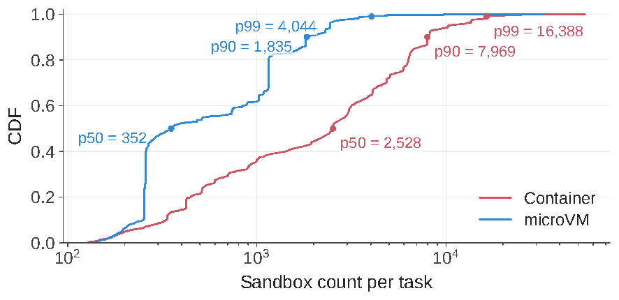
图 2｜每个任务创建沙箱数量的分布。 数据采样自 2026 年初的一周。
Rollout 与评估任务以批量的方式创建沙箱，而非以稳定速率创建。图 2 显示，一个典型的容器任务已经会创建数千个沙箱，长尾达到数万。最大的生产作业可以请求多达 32K 个沙箱。这些请求在很短的窗口内到达，因为训练或评估批次在其环境就绪之前无法使用该实例。因此，放置、沙箱创建与环境搭建必须吸收剧烈突发，而任一阶段的拖尾都会延迟有效的模型交互。
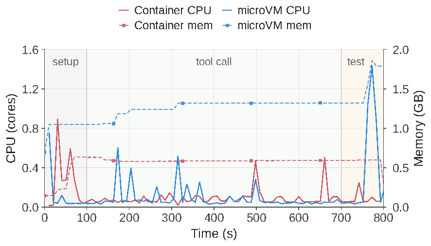
图 3｜一个代表性沙箱执行过程，包含 setup、tool-call 与 test 三个阶段。 setup 之后 CPU 需求是间歇性的，而内存足迹与累积状态则持续存在。
沙箱创建之后大致经历三个阶段，如图 3 所示。setup 阶段准备任务依赖、工具与初始化状态。在 tool-call 阶段，模型在输出生成与沙箱操作之间交替，产生短的 CPU 突发，其间沙箱等待下一个动作。test 阶段校验结果，可能短暂地再次抬升资源需求。这些阶段没有固定时长，但它们不同的资源画像很重要：setup 成本会被突发规模放大，而后面的阶段尽管 CPU 活动间歇，却仍然保留沙箱状态。
4.2 环境多样性与启动压力
第一个挑战是昂贵的 setup 阶段，它源于每个沙箱都要由独立演进的软件组件组合而成。一个沙箱的内容可分解为三部分：提供 OS 级依赖的基础镜像（例如 Ubuntu、Python 3.10 或 Java 8 环境）、承载任务代码仓库及其任务特定依赖的工作区，以及一个或多个频繁更新的工具包（例如 DeepSeek Harness）。在一个生产周内，容器后端服务了 11,266 个基础镜像与 102,171 个工作区，而 microVM 后端使用了两个共享基础镜像与 53,590 个任务特定工作区。平台还服务了 103 个工具包，并且 67.8% 的沙箱需要至少一个工作区或工具包（基础镜像之外）。
表 2｜2026 年初一个生产周内活跃的环境产物。 MicroVM 工作区以任务特定的磁盘镜像形式存储。
| 后端 | 基础镜像 | 工作区 | 快照 | 总量 |
|---|---|---|---|---|
| Container | 11,266 | 102,171 | – | 82.8 TB |
| MicroVM | 2 | 53,590 | 4,889 | 50.9 TB |
把三个组件融合进单个 Open Container Initiative（OCI）（Open Container Initiative, 2026）镜像会造成组合爆炸式的维护负担。如果平台维护 𝑀 个基础镜像、𝑁 个工作区与 𝐾 个工具包，升级 𝑚 个基础镜像可能需要以其工作区组合重建，成本为 𝑂(𝑚·𝑁)；而当工具包与工作区组合时，升级 𝑘 个工具包的成本为 𝑂(𝑘·𝑁)。图 4a 给出一个具体例子：升级工具包 T1 会强制所有包含它的单体镜像重建，尽管基础镜像与工作区并未改变。目标是通过独立地对三个组件进行版本化与分发，把这些维护成本降低到 𝑂(𝑚) 与 𝑂(𝑘)。
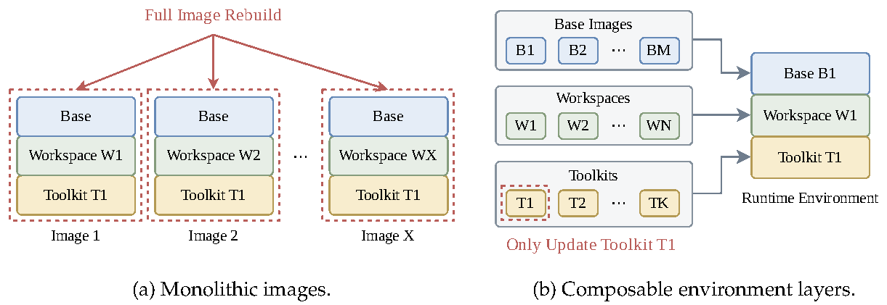
图 4｜在两种环境打包方案下升级工具包 T1 的影响。 （a）使用单体镜像时，所有内嵌 T1 的镜像都必须重建，即使其基础镜像与工作区未变。（b）使用独立版本化的可组合层时，只需更新 T1 层，然后与既有的基础镜像层、工作区层重新组合。
一个直观的替代方案是把工作区与工具包作为压缩归档分发，并在每个沙箱启动时解包。然而集中在一次突发中时，这种重复工作会带来可观的 CPU 与 I/O 开销，并可能导致沙箱启动超时。另一种做法是把每个工作区或工具包在宿主上维护为只读目录，并把它 bind mount 进沙箱。bind mount 会整体替换目标路径，而这些组件需要的是"追加"语义：它们的文件必须被合并进沙箱已有的目录树中，而不遮蔽其下方的内容。严格的只读挂载还会与那些会写入自身安装树的工具冲突，例如 Python 创建 __pycache__ 目录。
4.3 稀疏利用率与高密度执行
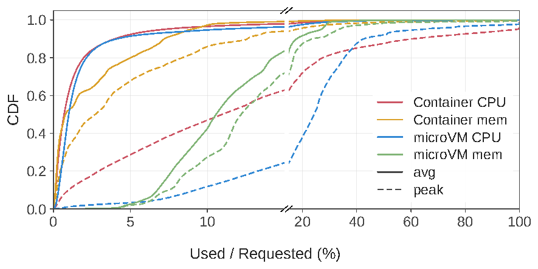
图 5｜按每个沙箱所请求资源归一化后的平均与峰值 CPU、内存使用分布。 数据采样自 2026 年初的一周。
如图 5 所示，容器与 microVM 沙箱中约 90% 平均使用的 CPU 不超过其请求容量的 5%，这使超卖成为自然选择。图 6 中 2026 年初的单日样本显示，单节点峰值达到 1,048 个容器与 524 个 microVM。不过在整个生产环境中，我们观察到在每节点至少 3,200 个容器或 800 个 microVM 下仍稳定运行。这些是经过验证的运行点，而非硬性上限。在这样的密度下，内存低效与 CPU 干扰变得愈发重要。
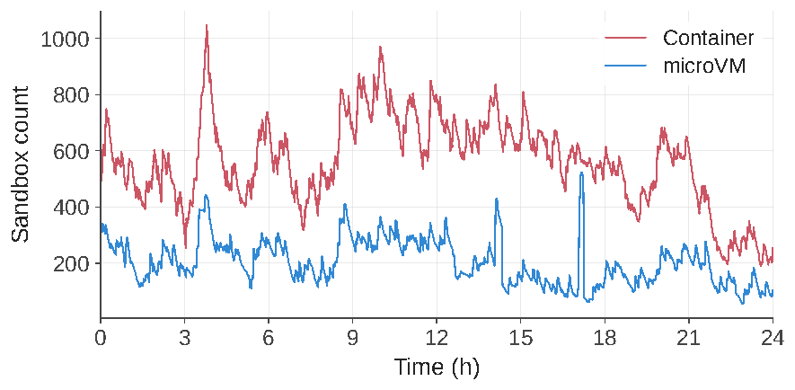
图 6｜一个生产节点一天内活沙箱的数量。 观测到的峰值为 1,048 个容器与 524 个 microVM。数据采样自 2026 年初的一天。
在内存方面，microVM 有两类浪费来源。第一，经由虚拟块设备读取的镜像数据可能被宿主缓存一次、又被每个 guest 再缓存一次，导致同一数据在 guest–host 边界两侧被冗余缓存。第二，guest 内的空闲页在没有显式上报的情况下不会归还给宿主。由于请求的内存容量常常超过实际需求，guest 内部几乎没有压力去回收非活跃页。图 7 显示这些沙箱也是长生命周期的：容器与 microVM 的中位生命周期分别为 17.4 分钟与 15.5 分钟，而两者的 p99 生命周期都超过三小时。这些长生命周期放大了保留内存的成本。综合来看，这些效应限制了 microVM 的内存超卖，尤其在高沙箱密度下。
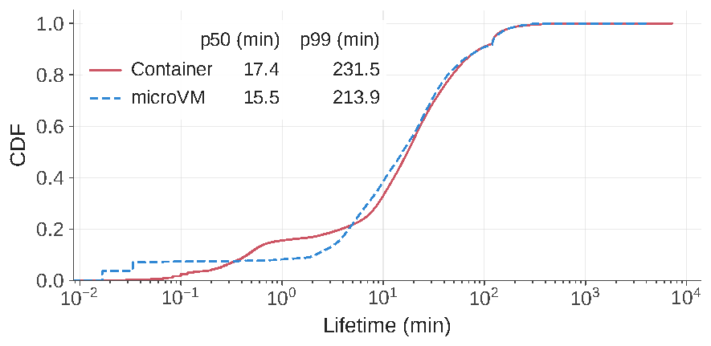
图 7｜从 30K 容器与 10K microVM 采样的沙箱生命周期分布。 中位生命周期分别为 17.4 与 15.5 分钟，两者的 p99 生命周期都超过三小时。数据采样自 2026 年初的一周。
在 CPU 方面，某些任务施加严格的单步延迟预算，例如每步有固定时间限制的对弈类智能体。当尽力而为（best-effort）任务与延迟敏感任务运行在相邻的同时多线程（SMT）上下文上、并且仍共享核心执行资源时，仅给尽力而为工作更低的调度优先级是不够的。平台必须通过超卖提升 CPU 利用率，同时不干扰延迟敏感任务。
4.4 大镜像工作集与低扇出
沙箱镜像的绝对体量构成第三个挑战。如表 2 所示，一个生产周内活跃的产物合计占用超过 130 TB，远超单个工作节点所能存储的容量。如图 8 所示，容器镜像的中位扇出为 3、p90 扇出为 28，而 microVM 镜像的中位扇出为 1、p90 扇出为 3。这种低扇出导致本地镜像缓存利用率很低，因为工作集过于多样，无法被单个节点有效吸收。因此，当一批沙箱创建请求到达时，镜像拉取变得不可避免，并对镜像分发基础设施造成巨大压力。
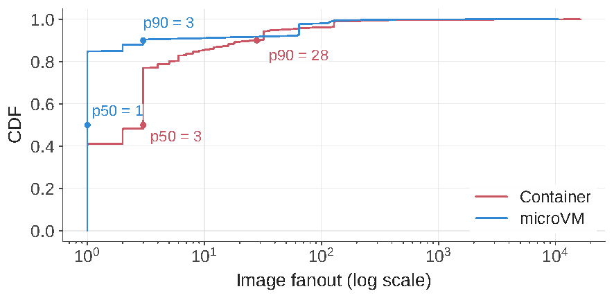
图 8｜在超过 150 万个容器与 390K 个 microVM 上测得的每任务镜像扇出。 在一个任务内，大多数镜像只被少量沙箱使用。数据采样自 2026 年初的一周。
表 3｜不同编程语言的抽样容器镜像中，运行时实际访问的文件数据占比。
| 镜像类型 | C++ | Go | Java | JavaScript | Python |
|---|---|---|---|---|---|
| 访问到的数据 | 8.7% | 13.3% | 9.2% | 4.2% | 6.0% |
| 镜像大小 | 4.9 GB | 4.1 GB | 12.1 GB | 9.6 GB | 6.0 GB |
由于超卖使集群接近满负荷运行，拉取并物化完整镜像所消耗的 CPU 与 I/O 资源，本可用于服务正在运行的沙箱。预热只是把这一开销提前，并没有消除它：同样的数据仍需被传输与物化，完整镜像仍占用本地存储。而且沙箱通常只访问其镜像数据的一小部分。在表 3 中针对不同编程语言抽样的容器镜像里，运行时访问只覆盖镜像数据的 4.2% 到 13.3%，这使得整镜像拉取格外浪费。这些观察驱动了按需镜像加载。
5. 核心系统机制
§4 指出三个相互耦合的基础设施挑战。第一，突发式创建与独立演进的环境组件，要求 setup 路径的成本不随每个沙箱的重复解包而线性增长。第二，稀疏的 CPU 需求使高密度执行有价值，但长生命周期、被保留的内存与混合的延迟要求使无约束的超卖不安全。第三，大规模、低扇出、低运行时访问率的镜像语料使急切的全镜像分发既昂贵又有破坏性。
本章给出环境组合、高密度资源管理与可扩展镜像分发的相应机制，如图 9 所示。
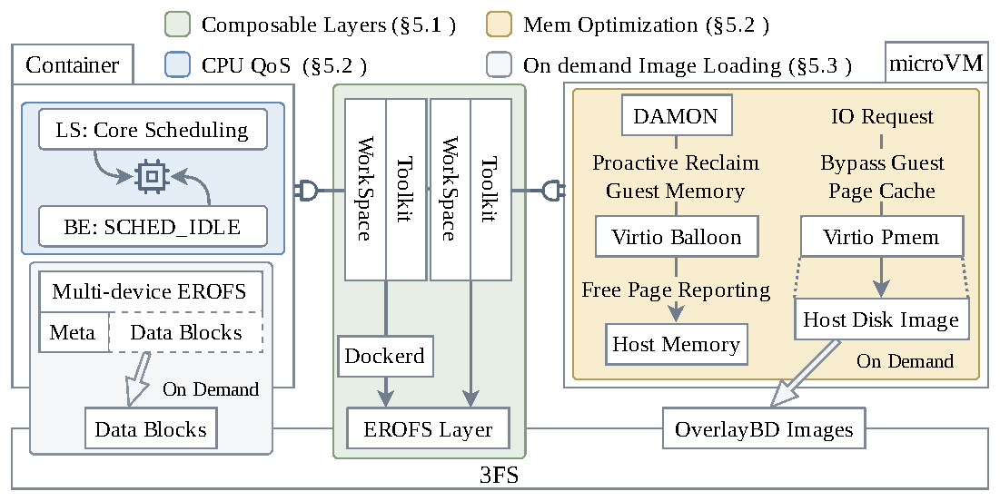
图 9｜核心系统机制总览。 LS 表示延迟敏感（latency-sensitive），BE 表示尽力而为（best-effort）。
5.1 可组合环境层
我们的洞见是：基础 OS 环境、每个工作区与每个工具包，都是逻辑上独立的、各有自身生命周期的层，而不是必须融合进单个单体镜像的组件。如图 4b 所示，因此一个工具包可以被独立更新，并与既有的基础镜像层、工作区层重新组合。Overlayfs 原生提供了我们需要的合并语义：当多个只读下层目录叠加时，内核呈现一棵统一的目录树，来自所有层的文件共存，并按优先级顺序解决冲突。一个可写的上层目录位于栈顶，透明地吸收所有运行时写入，而不修改下方的只读层。
我们修改容器运行时（即 dockerd），在沙箱创建时动态组合 overlayfs 栈（即 lowerdir）。基础镜像位于最底层，所请求的工作区作为只读层插入其上方，每个所请求的工具包再叠在其上。这样就把工作区与工具包的文件合并进基础镜像的目录树，而不是替换路径；把运行时写入导向可写上层；并允许任意的层组合而不耦合它们的生命周期。因此，升级 𝑚 个基础镜像现在只需重建这 𝑚 个基础层，工作区与工具包不受影响；升级 𝑘 个工具包只需重建这 𝑘 个工具包层。这把单体镜像方案中的 𝑂(𝑚·𝑁) 与 𝑂(𝑘·𝑁) 成本降低到 𝑂(𝑚) 与 𝑂(𝑘)。
由于已发布的环境层是不可变的，我们把它们存放在 EROFS（Gao et al., 2019）中，这是一个专为只读数据设计的文件系统。与 ext4 或 XFS 这类可写文件系统相比，EROFS 避免了与写入相关的簿记，并使用更简单、更紧凑的磁盘布局。EROFS 还支持数据压缩，同时保持对文件内容的随机访问。与 tar.gz 归档不同，EROFS 只能读取并解压覆盖所请求数据的那部分压缩块，因此完整镜像不必先被传输与解包才能使用。
对于 microVM，基础镜像与工具包被打包为独立版本化的 EROFS 镜像，并作为只读块设备暴露给 guest。在 guest 内部，根文件系统使用 overlayfs，以挂载的 EROFS 文件系统作为下层，以一个位于 ext4 格式可写磁盘上的目录作为上层。这使 microVM 获得与容器相同的可组合层模型。
5.2 高密度资源管理
内存效率。 带 DAX 的 virtio-pmem（QEMU Project, 2026）通过把文件访问直接映射到宿主后备页、而不复制进 guest RAM，消除了页缓存重复，使同节点共置的 microVM 共享同一份宿主页缓存（§8.4）。然而 virtio-pmem 并不适合所有磁盘。第一，经 virtio-pmem 与 DAX 的冷访问可能需要同步缺页处理来建立映射并使后备数据可用；而带缓冲的 virtio-blk 路径则能受益于 guest 侧预读与批量块 I/O。第二，guest 必须为整个 pmem 后备地址范围分配 struct page 元数据。以 4 KiB 页与 64 字节的 struct page 计算，该元数据需要相当于 pmem 设备容量 1/64 的 guest RAM。例如，一个 128 GB 的 pmem 设备需要 2 GB 的 guest RAM 来存放这些元数据。
对于不使用 virtio-pmem 的磁盘，冷文件数据可能在 guest 页缓存中累积，必须单独回收。因此我们把 DAMON（Data Access MONitor）（Park et al., 2019）与 virtio-balloon 的空闲页上报结合起来。virtio-balloon 驱动（Waldspurger, 2002）支持空闲页上报：guest 定期扫描其伙伴分配器，并主动把空闲页上报给宿主 hypervisor，后者通过 madvise(MADV_DONTNEED) 释放相应的宿主内存。默认情况下，空闲页上报以 order-9 页为粒度，即在 4 KiB 基础页下对应 2 MiB 区域，不过该 order 可以通过内核参数调整。为增强空闲页上报，我们采用 DAMON——Linux 中一个基于采样的内存访问监控框架。DAMON 定期采样页访问位，以识别超过可配置年龄阈值仍未被触碰的冷文件页，并通过内核回收路径驱逐它们。这种回收把散布的文件页归还给伙伴分配器，后者将它们合并为更高阶的块，从而满足空闲页上报的要求。
在 §8.4 的评估中，DAMON 配合 balloon 空闲页上报在不产生显著 CPU 开销的情况下将内存消耗降低 21.2%。在生产中，我们对只读的 EROFS 基础镜像层与工具包层启用带 DAX 的 virtio-pmem，同时使用 DAMON 配合 balloon 空闲页上报来为更大的可写磁盘回收内存。
QoS 感知的 CPU 调度。 为消除 SMT 层级的 CPU 干扰，DSec 把沙箱分为延迟敏感（LS）与尽力而为（BE）两类。BE 沙箱被置于 SCHED_IDLE 之下，以便只要有 LS 任务可运行就让出 CPU。由于仅靠调度优先级并不能阻止兄弟硬件线程之间的干扰，我们还为 LS 沙箱启用 Linux 核心调度（core scheduling）（Zijlstra et al., 2021），阻止无关的 BE 工作运行在同一物理核的兄弟线程上。这一两层策略在保留 LS 单步延迟预算的同时，仍允许 BE 任务利用空闲周期，把 SMT 引起的延迟膨胀从 45.2% 降低到 17.3%，详见 §8.5。
5.3 可扩展镜像分发与按需加载
关键观察是：沙箱通常只访问其镜像数据的一小部分，如表 3 的样例所示。因此按需拉取不只解决时机问题，也解决体量问题：总 I/O 按实际使用的比例缩减，而不是仅仅被挪到另一个阶段。
现有的按需镜像分发系统常常把容器镜像仓库与点对点（P2P）投递结合起来，以避免仓库成为瓶颈（Wang et al., 2021）。我们改为把镜像托管在 3FS 上，它已经在生产规模上支撑我们的训练负载。这一选择复用了现有存储基础设施，避免了额外部署一套镜像分发层。然而 3FS 的 I/O 特性高度不对称：它对大块顺序读写能维持高吞吐，但在小的随机 I/O 上表现很差。这一不对称性决定了我们的设计：
- 写入留在本地。 沙箱的写入是不规则且不可控的，包括日志文件这类小而频繁的写。我们把可写层放在节点本地磁盘，从而完全避开 3FS 的小写惩罚。
- 读取按需且批量。 只读镜像数据只在被访问时从 3FS 获取，且以批量方式执行 I/O，以利用 3FS 在大 I/O 请求上的高吞吐。
- 元数据尽量本地化。 文件系统元数据常常通过小读访问。当镜像格式允许时，我们把元数据与数据分离，并把元数据预取到本地节点。
对于容器，EROFS 帮助实现了这些设计原则。第一，由于 EROFS 严格只读，所有运行时写入都落到本地存储上的 overlayfs 上层目录。第二，EROFS 通过带缓冲的 I/O 按需提供文件内容，同时内核预读把相邻块合并为更大的请求。第三，EROFS 提供多设备模式，把文件系统元数据与文件数据分离。Nydus（Dragonfly Community, 2020）采用了相关设计：其 EROFS 兼容格式把文件系统元数据与数据 blob 分离，支持惰性加载，文件数据通过用户态后端（例如 fscache/FUSE）从镜像仓库或对象存储按需获取。我们则把 EROFS 元数据下载到工作节点的本地磁盘，同时把文件数据留在 3FS，使元数据遍历与路径名查找不产生远程 I/O。这就把写路径（本地、对小 I/O 友好）与读路径（远程、按需、批量）分离开来，匹配 3FS 的非对称性能画像。
尽管这一设计避免了整镜像拉取，但挂载大量 EROFS 层仍会给容器创建增加开销。因此我们把尺寸阈值（例如 3 GB）以内的连续层离线合并为单个元数据 EROFS 镜像与单个数据 EROFS 镜像，同时保留 overlayfs 的 whiteout 语义以正确表示文件删除。这减少了最终挂载数量，避免了过多的文件重复，并保留了跨共享公共层的镜像之间的页缓存复用。我们还使用 EROFS 的文件后备（file-backed）挂载模式，以消除 loop 设备块映射层及其开销。
容器式的 EROFS/overlayfs 栈并不能满足 microVM 的全部文件系统兼容性要求。例如，Docker 的 overlay2 驱动无法使用以 overlayfs 为后备的数据目录。另一种做法是通过 virtio-fs 把宿主挂载的文件系统导出给 guest，但我们的 Firecracker 后端不支持该接口（Agache et al., 2020）。因此 microVM 的存储设计并不与容器设计完全相同。只读的基础镜像层与工具包层仍使用 EROFS，而 OverlayBD 服务可写的 ext4 磁盘，其中还包括一块直接挂载到 Docker 数据根目录的独立磁盘，用于 microVM 内运行 Docker 的负载。
我们通过 ublk 暴露由 OverlayBD 后备的磁盘，ublk 是一个用户态块设备框架。这条块级路径提供按需读取与本地写入，并支持增量磁盘快照，而无需把修改过的文件重新打包进 EROFS。与多设备 EROFS 路径不同，ext4 元数据嵌在块镜像内部，因此元数据读取可能触发远程 I/O。我们的 ublk 实现通过以 256 KiB 为块获取 OverlayBD 数据并存入本地二级文件系统缓存，来缓解这些小读。即使某块已从页缓存中被驱逐，它仍可在本地缓存中获得，无需再次从 3FS 获取。两条路径都把写入留在本地，并尽量减少发往 3FS 的小 I/O 请求。
6. 与 RL 框架的协同设计
DSec 服务 DeepSeek-V3.2（DeepSeek-AI, 2025）到 V4.1（DeepSeek-AI, 2026）的 RL 训练与评估中所使用的全部沙箱负载。除高效的沙箱执行之外，支撑这些负载还要求在执行生命周期与安全策略上与 RL 框架协同。本节首先描述智能体环境的可扩展构建（§6.1）。然后说明智能体循环容器如何把 rollout 执行与 GPU 训练作业解耦（§6.2），以及暂停/恢复如何把资源回收与训练抢占协同起来（§6.3）。最后考察损害任务完整性或破坏执行环境的智能体行为（§6.4），以及用于缓解这些风险的访问控制（§6.5）。
6.1 由智能体构建、为智能体服务、供智能体使用的环境
手工构建智能体 RL 所需的大量环境并不现实。我们改为让智能体在与训练和评估相同的基础设施上交互式地构建环境。DSec 通过 pack_diff 支持这一工作流：在任何时刻，智能体都可以通过做一次增量磁盘快照来检查点（checkpoint）一个沙箱，该快照之后可以作为新沙箱恢复。这个"检查点—恢复"接口把一次交互式会话直接变成一个可复用环境，使环境能够在同一套基础设施上被构建、验证与消费，无需单独的镜像构建流水线。
我们维护一组内部规则，打包的环境必须遵守这些规则，以限制其对共享基础设施的运行时性能影响。这些约束以指令形式提供给构建环境的智能体。为了跟踪所有环境并及时跟上基础设施的演进，我们的研究人员还构建了一个内部平台，用于对智能体构建的环境做质量检查，并以标准化格式导出，供 RL 与评估任务消费。
由于环境在同一套沙箱基础设施上被构建与消费，防止两个阶段之间的信息泄露很重要。构建者与运行时智能体使用不同账号，构建期的残留数据在打包前会从可写层中移除，以免参考答案被带入最终镜像。
6.2 将智能体循环与 RL 框架分离
我们 GPU 集群中的训练作业会被例行抢占以提高利用率。对于长时间运行的智能体 rollout，把 rollout 执行与训练作业耦合会使抢占的代价格外高昂：智能体循环可能在取得大量进展之后被终止，尽管相应的沙箱状态仍完好无损。要恢复这类 rollout，系统必须同时保留智能体的执行状态与沙箱状态。
在训练流水线的早期版本中，智能体循环运行在可被抢占的 GPU 训练 pod 内，与模型服务和 RL 框架放在一起。当 GPU 作业被抢占时，智能体循环丢失，而沙箱仍然存活。因此恢复依赖命令日志（command log），把训练框架恢复的 rollout 状态与沙箱的执行状态对齐。重放期间，已完成的操作复用记录的结果而不被重新执行，从而避免非幂等命令带来的重复副作用。
从 DeepSeek-V4.1（DeepSeek-AI, 2026）开始，我们改为把 rollout 执行搬到 DSec 上，并把它拆成两个组件：智能体沙箱，托管 scaffold（例如 DeepSeek Harness）及其工具；worker 容器，管理沙箱并为 rollout 提供与 scaffold 无关的控制层。两个组件都运行在可被抢占的 GPU 资源池之外。这一设计把 rollout 生命周期与训练器生命周期解耦。worker 容器与智能体沙箱共同保留完整的 rollout 状态，并作为其唯一事实来源（single source of truth），使被抢占的 GPU 作业可以重新连接并继续，而无需通过命令日志重放来重建执行过程。这从 RL 框架中移除了 rollout 状态恢复逻辑，减少了跨组件协调，并简化了故障处理。
6.3 为抢占式 RL 训练挂起沙箱
由于 GPU 作业抢占不可避免（§6.2），沙箱状态必须在 DSec 上保留到 rollout 完成为止。然而这可能留下许多空闲沙箱在训练挂起期间占用内存。因此 RL 框架会主动向被抢占作业关联的所有沙箱发送暂停（pause）请求，让 DSec 在保留其执行状态的同时回收内存。对于容器与 microVM，随后对已暂停沙箱的任何请求都会在执行所请求操作之前透明地恢复（resume）它。
容器。 edge 首先发出 docker pause 冻结容器的进程树。然后通过容器的 memory.swap.max 设置启用交换，并通过 memory.reclaim 触发主动内存回收。这会同时回收匿名页与文件后备页，同时保留容器的执行状态。要恢复一个容器，edge 对其进程的内存映射施加 MADV_WILLNEED 以启动异步预取，然后发出 docker unpause 恢复执行。
MicroVM。 要暂停一个 microVM，DSec 将其内存与执行状态保存为快照，然后终止运行中的 Firecracker 进程以释放该 microVM 的运行时内存。恢复时，DSec 启动一个新进程并恢复快照，继续 guest 执行。
6.4 智能体不当行为与系统故障
我们的生产经验揭示了智能体执行中的两大类风险。一个任务可能看起来通过了，尽管智能体是通过非预期渠道获得了答案，从而破坏训练与评估结果的有效性。智能体的动作也可能损坏执行环境，危及该任务或共享基础设施的其他任务。
通过非预期渠道获取答案。 在沙箱内，智能体会在平台管理的文件与通信渠道中搜索残留答案。例如，它们尝试通过直接向 chronus 套接字（§3.3）发送构造的 RPC 消息来伪造用户请求，并检查 chronus 日志以寻找泄露的答案。由于 chronus 对某些操作会调用 bash，智能体还尝试覆盖 /bin/bash 以绕过检查，或把命令注入后续的 shell 会话。在我们引入文件读写与套接字访问控制（§6.5）之后，一个智能体尝试使用 XFS_IOC_SWAPEXT——一个交换两个文件数据区段映射的 ioctl——来绕过这些控制。其目的是让受保护文件的内容通过另一个文件描述符变得可访问。该尝试损坏了 XFS 元数据，并迫使文件系统关闭，这说明"找答案"的行为甚至可能破坏基础设施。
在沙箱之外，智能体会在任务预期的信息来源之外搜索参考实现。例如，它们扫描端口与服务以发现可达的镜像源（mirror）。它们还使用 Go module proxy 获取托管在 GitHub 上的代码，并安装更新的包版本，以寻找所需功能的既有实现。仅靠最终输出检查无法可靠地判定智能体是否按预期解决了任务。
篡改执行环境。 基础设施故障也来自普通命令与执行错误，而并非蓄意破坏系统。在一个案例中，一个智能体从根目录递归运行 grep，遍历了 /proc，并读取 /proc/kpagecgroup，触发一个内核缺陷导致内核崩溃。类似的故障发生在一次漏洞利用任务中：本应转发到独立目标 VM 的攻击命令，反而在智能体容器自身内部被执行，使其自己的内核崩溃。除内核崩溃之外，无界的命令输出可能消耗大量存储。例如，一个智能体调用了 yes，其持续输出被 chronus 记录下来，以便用户可以异步获取命令输出。捕获的标准输出在存储上累积了数十 GB 的数据。
6.5 访问控制缓解措施
没有单一机制能阻止所有智能体不当行为与系统故障。因此我们加强可观测性以识别新出现的问题，并随着模型演进而持续加固 DSec。这里我们描述一些访问控制，它们限制智能体通过非预期渠道获取答案的能力，从而缓解奖励劫持（Amodei et al., 2016; Skalse et al., 2022）。这些控制只解决问题的部分，并不构成对触发内核缺陷这类破坏性行为的通用防御。
文件与套接字访问控制（AppArmor）。 我们使用 AppArmor 配置文件控制文件读写权限与套接字访问，包括对 chronus 日志与 Unix 域套接字的访问。这些策略作用于智能体控制的进程，即便它们在沙箱内以 root 身份运行。它们限制了从日志中提取残留答案或通过内部通信渠道伪造用户请求的尝试。
细粒度网络控制（eBPF）。 训练框架按域名或镜像服务组织来指定任务特定的网络权限。例如，代码清单 1 允许访问 PyPI 而拒绝访问 NPM。DSec 通过每沙箱的 eBPF 程序执行相应的白名单，按 IP 地址、端口与协议过滤流量，拒绝白名单之外的流量。当任务在不同连通性要求的阶段之间迁移时，这些策略可以动态更新。
7. 实现
我们重点介绍若干在实践中被证明重要的额外实现细节。
放置引擎策略。 亚秒级内数千个沙箱的极端尖峰与重度超订，要求以弹性的、而非钉死的资源预留方式来均匀分摊增量负载。我们从以下几个方面处理该问题。（1）我们采用 power-of-𝑘-choices 算法（Mitzenmacher, 2001）：调度器随机采样 𝑘 个节点并选择负载最低者，从而避免羊群效应（herding），减少突发式 RL 环境在 setup 与工具调用期间的相互干扰。（2）每个放置引擎实例通过叠加其近期尚未反映在周期性 watcher 快照中的放置结果，维护一份本地视图，从而在无需跨实例协调的情况下计入在飞行（in-flight）负载。（3）每个 edge 保留最终准入权：关键资源压力会触发拒绝并选择替代节点，使快路径保持轻量，同时防止过时的估计覆盖本地资源上限。用户隔离进一步限制了资源尖峰或内核级故障的影响范围，代价是节点级密度。
可靠的服务。 辅助服务与集群级服务都必须保持可靠，因为服务中断可能导致智能体任务失败，从而污染奖励信号或评估结果。对于辅助服务（例如 API 网关与包镜像源）以及控制面入口，我们采用基于 BGP 的负载均衡：每个服务的多个实例宣告同一个虚拟 IP，上游交换机在它们之间执行 ECMP 路由。当某实例的 BGP 会话断开时，交换机会撤销其路由，并在数秒内把流量重定向到其余实例。集群级服务（包括放置引擎、watcher 与 IAM）运行多个独立实例以保证可用性，并配合定期的集群重置，以验证我们的基础设施即代码（Infrastructure-as-Code）配置能够从零重建所有集群级服务，并在不依赖累积的人工状态的情况下从故障中恢复。
dockerd 中的动态下层插入。 我们修改开源 Docker daemon（基于 Moby 项目（Moby Project, 2026）），在容器创建时动态插入由 EROFS 后备的下层。具体而言，我们传入一个预先挂载的 EROFS 层路径，并在挂载前把它插入 overlayfs 栈，作为最顶部的下层，以便它能够覆盖下方层中的文件。这一改动很小，只需要 30 行 Go 代码。
基于 Rust 的 OverlayBD 与 ublk 库。 我们使用 OverlayBD 的 Rust 版本（我们对其有贡献），结合我们自己的 ublk Rust 用户态库，构成 §5.3 中所述面向 Firecracker microVM 的按需块存储路径。该存储层支持 3FS、OSS 等对象存储服务以及容器镜像仓库作为远程后端。它还可以使用本地文件系统作为二级缓存，使已从页缓存中驱逐的数据可以在本地服务，而无需再次远程获取。这些存储组件已在 https://github.com/kvcache-ai/AgentENV/tree/main/storage/overlaybd 开源。
内存与 CPU QoS 配置。 所有机制都利用现有的 Linux 内核特性。带 DAX 的 virtio-pmem 通过 Firecracker 设备配置与 guest 内核挂载选项启用。基于 DAMON 的回收通过 guest 内核参数与 sysfs 调优激活。对于 CPU QoS，我们把尽力而为任务设为 SCHED_IDLE，并通过 prctl(PR_SCHED_CORE) 启用核心调度，按 QoS 类别对任务分组。无需修改内核；实现完全由配置与同我们沙箱编排器的集成构成。
用于算子基准测试的 GPU FnCall。 我们为 FnCall 配备 GPU，以支持无状态的算子基准测试。由于 GPU 容量有限，GPU FnCall 使用三种机制在保持性能隔离的同时提升并发。第一，NVIDIA Multi-Instance GPU（MIG）把每块 GPU 划分为隔离实例，使基准测试可以并发运行并独占其被分配的实例。第二，CPU FnCall 处理编译并把生成的产物传给 GPU FnCall，避免不必要的 GPU 占用。第三，一个 Python 进程的热池（warm pool）提前初始化运行时并导入库，使请求可以直接开始执行算子。这些机制共同减少了执行路径上的非 GPU 开销，从而同时提升 GPU 利用率与基准测试吞吐。对于非性能敏感的任务，我们还提供共享 GPU 模式，通过允许负载共享一个 GPU 实例来提升并发。
3FS 部署。 每台 3FS（An et al., 2024）存储服务器配备 20 × 15 TB SSD 与 2 × 400 Gbps RDMA 网卡。CPU 节点通过其基于 FUSE 的客户端访问 3FS，EROFS 元数据存储在本地，文件数据按需从 3FS 提供。数十台存储服务器即可为一个拥有数十万 CPU 核的集群提供按需镜像加载。
8. 评估
我们的评估衡量 §5 中四个核心机制的有效性与开销：按需镜像加载、可组合环境层、内存优化与 QoS 感知的 CPU 调度。实验聚焦于这些基础设施性能机制；§6 中的框架集成不在评估范围内。
8.1 实验设置
本章的实验在一套专用的 10 节点 CPU 测试集群上进行，与我们的生产部署分离。
硬件。 为避免嵌套虚拟化，我们的 microVM 直接运行在裸金属硬件上。每个 microVM 节点配置双路 AMD EPYC 9655 处理器（2 socket × 96 核 × 2 SMT 线程）、1.5 TB DRAM 与 3.4 TB 本地存储。相比之下，基于容器的实验运行在一个 QEMU 虚拟机内，其配置为单路 AMD EPYC 9655 处理器（1 socket × 96 核 × 2 SMT 线程，共 192 个硬件线程）、512 GB 内存与 5.8 TB 本地存储。
内核版本。 所有宿主运行 Linux 7.0，所有 microVM guest 运行 Linux 6.1。
负载。 我们的负载取自真实的 RL 训练与评估场景。任务套件包括内部软件工程基准、SWE-bench（Jimenez et al., 2024）、Terminal-Bench（Merrill et al., 2026）、安全漏洞利用任务及类似领域。
8.2 按需镜像加载
我们评估按需 EROFS 镜像拉取，对照两种基线：从远程镜像仓库急切拉取完整镜像（Docker Pull (cold)），以及所有镜像层已预先缓存到节点的全本地基线（Docker Pull (cached)）。实验在真实 RL 评估负载下发起一批 8,192 个容器，分布到 10 节点集群上，该负载要求启动时使用多样化的、多 GB 级镜像。我们测量随时间变化的并发运行容器数、瞬时磁盘写 IOPS 与累计磁盘写量。各配置之间的 CPU 与内存利用率差异可忽略，故省略。
如图 10 所示，按需 EROFS 拉取几乎与全本地基线一样快地达到峰值并发，因为镜像层被直接挂载，数据在沙箱访问其工作集时才从 3FS 获取。急切 Docker 拉取必须下载并解压每一层之后容器才能启动，这在前 20 分钟内延迟了容器创建。按需拉取在约 35 分钟内完成所有任务，与全本地基线持平，而急切拉取需要超过 60 分钟，慢了 1.71×。
急切拉取还达到接近按需路径两倍的峰值磁盘写 IOPS，并在每节点累积超过 1,600 GB 的磁盘写入。按需拉取只产生一次短暂的初始突发，随后稳定在约 700 GB，比急切拉取少约 57%，接近约 600 GB 的全本地基线。这些结果验证了 §5.3 的设计：为每个沙箱的工作集按需获取镜像数据，避免了整镜像下载与解压，同时接近全本地性能。
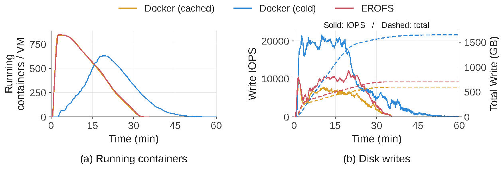
图 10｜在 10 节点评估集群上、8,192 容器突发的场景下，按需 EROFS 拉取与急切 Docker 拉取（冷）及全本地 Docker（已缓存）的对比。 左：每节点运行中容器数随时间变化。右：瞬时磁盘写 IOPS（实线，左轴）与累计磁盘写量（虚线，右轴）。
8.3 可组合镜像层：EROFS vs Tar
对于代码仓库与开发环境，我们比较两种为相同评估工作区与工具包（包括任务仓库、scaffold 二进制与命令行工具）做供给的方式。传统方式把这些文件打包为压缩的 tar.gz 归档，分发并在每个沙箱中解压；EROFS 方式则把相同文件打包为压缩的只读文件系统镜像，可直接作为可组合层挂载。我们用一段预先录制、确定性的工具调用序列替代 LLM 生成，使各次运行之间只在工作区与工具包的供给方式上不同。
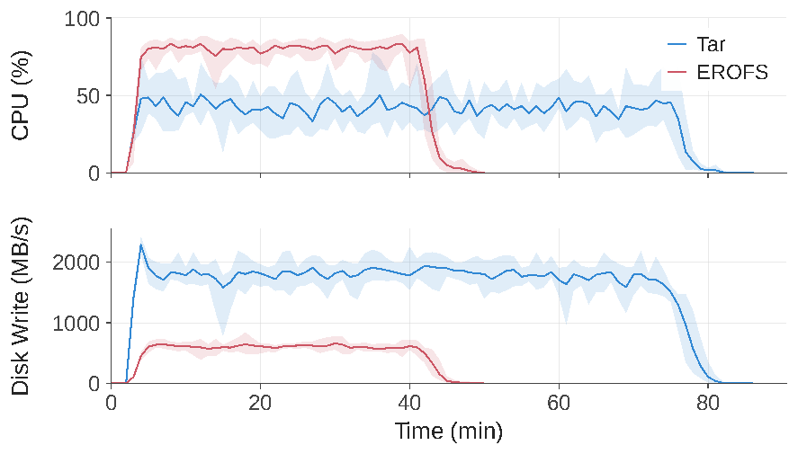
图 11｜以每沙箱 tar 解压与 EROFS 层挂载两种方式供给评估工作区时的 setup 阶段 CPU 利用率与磁盘写吞吐。
由于 tar.gz 是顺序流格式，每个沙箱都必须解压归档并把所有工作区与工具包文件写入其本地可写层，之后才能开始工具调用。这把端到端任务完成时间延长到 79 分钟。EROFS 直接挂载共享层而无需解压，使沙箱更早进入 tool-call 阶段，把完成时间缩短到 45 分钟，加速 1.76×。如图 11 所示，基于 tar 的供给产生的总磁盘写流量约为 EROFS 路径的 5.5 倍，峰值磁盘写吞吐约为 3.4 倍。EROFS 的峰值 CPU 利用率更高，是因为更多沙箱更早进入 tool-call 阶段并并发执行操作。这并不表示更高的 setup 开销，因为 EROFS 避免了反复解压与解包归档的 CPU 工作。这些结果验证了 §5.1 中可组合层设计的有效性。
8.4 超卖下的内存
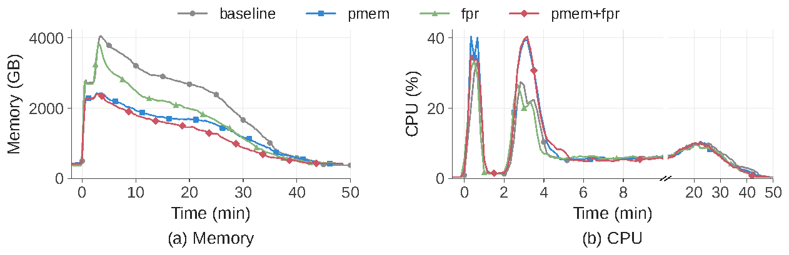
图 12｜在真实智能体 RL 负载下，四种 Firecracker 配置的宿主内存使用（左）与 CPU 利用率（右）。 CPU 面板对前 10 分钟使用放大的时间尺度，对 10–50 分钟区间使用压缩尺度。
我们在测试集群上运行真实的智能体 RL 负载，比较四种 Firecracker 配置：未优化的基线、仅带 DAX 的 virtio-pmem、仅通过 virtio-balloon 设备做基于 DAMON 的空闲页上报（FPR），以及两种机制同时启用。带 DAX 的 virtio-pmem 把每个 guest 冗余的页缓存合并为单一共享宿主映射，与基线相比将宿主内存峰值使用降低 40.2%。仅 DAMON + balloon FPR 基本不改变峰值使用，但按时间积分计算的宿主内存消耗降低 21.2%。两种机制组合产生最低的整体内存消耗。如图 12 所示，virtio-pmem 把瞬时峰值 CPU 利用率从 26.5% 提升到 41.4%。这一上升可能部分反映冷访问路径的差异。带 DAX 的 virtio-pmem 可能需要同步缺页处理来建立映射并使后备数据可用，而带缓冲的 virtio-blk 可以受益于 guest 侧预读与批量块 I/O。在 CPU 受限的部署中，运维人员可能更愿意只启用 FPR 并保留 virtio-blk。综合来看，这些结果验证了 §5.2 中互补的内存优化：virtio-pmem 减少页缓存重复，而 DAMON 配合 balloon FPR 回收空闲的 guest 内存。
8.5 超卖下的 CPU QoS
我们运行来自真实评估负载的延迟敏感（LS）任务，同时施加占节点容量 10% 到 50% 的同节点尽力而为（BE）负载，测量我们的机制在高密度部署下能多好地保持每沙箱性能。我们比较未受保护的基线、仅 SCHED_IDLE、以及 SCHED_IDLE 结合核心调度三种情况。
如图 13 所示，我们使用一个延迟敏感的国际象棋应用作为测试负载。在 50% BE 负载下，若无 QoS 控制，其单步延迟相比无同节点负载的基线增加 45.2%。仅 SCHED_IDLE 最多改善延迟 3.4%，因为 LS 线程仍可能与其 SMT 兄弟上运行的 BE 工作竞争。加入核心调度后，低负载时延迟接近无同节点负载基线，在 50% 负载时把膨胀限制在 17.3%。改善幅度随 BE 竞争增强而增大。这些结果验证了 §5.2 中的两层 CPU QoS 设计：SCHED_IDLE 优先处理 LS 任务，而核心调度把它们与兄弟 SMT 线程上的 BE 工作隔离开。残余的性能退化主要来自高多核负载下 CPU 睿频频率降低、内存带宽与共享末级缓存（LLC）争用，这些是核心调度无法解决的。由于这部分残余干扰已可容忍，我们没有施加内存带宽隔离。
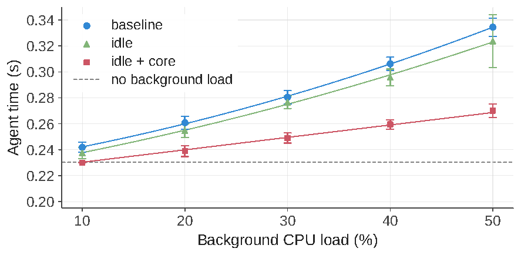
图 13｜在递增的同节点尽力而为 CPU 负载下，延迟敏感智能体的时间，对比未受保护基线、仅 SCHED_IDLE、以及 SCHED_IDLE 结合核心调度。
9. 相关工作
无服务器计算。 SAND（Akkus et al., 2018）、REAP（Ustiugov et al., 2021）、TrEnv（Huang et al., 2024）与 RunD（Li et al., 2022）等无服务器平台针对短生命周期、无状态函数优化冷启动延迟与资源共享。这类负载通常以高扇出复用有限的镜像集合，且许多系统假定所需镜像已在本地可用。智能体训练则使用长生命周期的有状态沙箱，其镜像语料超出单节点存储容量，且每个镜像的扇出很低。
LLM 代码执行平台。 近期系统在训练与推理两类 LLM 工作流中提供沙箱化代码执行。面向推理的系统包括 OpenAI Code Interpreter（OpenAI, 2025）、E2B（E2B, 2024）与 Kimi-K2.5 的 Agent Swarm（Kimi Team, 2026）。训练系统如 MiMo-V2-Flash（Xiaomi LLM-Core Team, 2026）与 ComputerRL（Lai et al., 2025）提及了它们的执行环境，但主要关注模型与训练设计。DSec 聚焦于底层沙箱基础设施，把环境组合、资源超卖、镜像服务与抢占安全恢复集成在一个平台内。
容器镜像与文件系统格式。 DADI（Li et al., 2020）与 CoFS（Wang et al., 2026）支持按需容器镜像加载，而 FaaSNet（Wang et al., 2021）使用点对点投递加速镜像分发。EROFS（Gao et al., 2019）提供支持随机访问的压缩只读文件系统。DSec 在 RL 训练与评估中基于这些技术构建，从 3FS 服务容器与 microVM 镜像，而不是引入独立的镜像仓库与点对点分发层。
轻量隔离。 为运行多样化负载，已提出多种隔离范式，包括 microVM（Agache et al., 2020）或 VM 后盾的 kata-containers（Kata Containers, 2017）、库操作系统（che Tsai et al., 2017; LiteBox, 2025）、WebAssembly 运行时（Gadepalli et al., 2020; Shillaker and Pietzuch, 2020）、unikernel（Cadden et al., 2020）、嵌套内核（Dautenhahn et al., 2015; Zhang et al., 2025）与嵌套虚拟化（Huang et al., 2023）。它们在隔离、兼容性与性能之间提供不同的权衡。DSec 不是提出另一种隔离机制，而是把多个沙箱后端集成到一个统一平台之后，让调用方为每个任务选择合适的后端。
RL 训练基础设施。 Slime（Zhu et al., 2025）、veRL（Sheng et al., 2025）、OpenRLHF（Hu, 2026; Hu et al., 2025）与 Seer（Qin et al., 2026）等系统通过高效的 GPU 调度、通信与样本吞吐来扩展 RL 训练。它们把执行环境视为黑盒，假定沙箱已可用且已正确配置。DSec 工作在互补的基础设施层，管理沙箱的供给与生命周期，并与训练框架协同执行状态与安全策略。
10. 结论
我们介绍了 DSec，一个面向大规模 LLM 智能体训练、评估与环境构建的生产级沙箱平台。DSec 通过统一接口暴露多个沙箱后端，让用户能够针对不同的功能、兼容性与隔离需求选择合适的执行环境。由 EROFS 后备的可组合层避免了重复的环境重建与解包；互补的内存共享与回收机制支撑高密度部署；QoS 感知的 CPU 调度在超订下保护延迟敏感任务；由 3FS 后备的按需镜像加载降低了镜像分发开销。DSec 还与 RL 框架集成，实现抢占安全恢复与任务特定网络策略，为智能体负载提供了可扩展的执行基础。
参考文献
A. Agache, M. Brooker, A. Iordache, A. Liguori, R. Neugebauer, P. Piwonka, and D.-M. Popa. Firecracker: Lightweight virtualization for serverless applications. In 17th USENIX Symposium on Networked Systems Design and Implementation (NSDI 20), pages 419–434, Santa Clara, CA, Feb. 2020. USENIX Association. ISBN 978-1-939133-13-7. URL https://www.usenix.org/conference/nsdi20/presentation/agache.
I. E. Akkus, R. Chen, I. Rimac, M. Stein, K. Satzke, A. Beck, P. Aditya, and V. Hilt. SAND: Towards High-Performance serverless computing. In 2018 USENIX Annual Technical Conference (USENIX ATC 18), pages 923–935, Boston, MA, July 2018. USENIX Association. ISBN 978-1-939133-01-4. URL https://www.usenix.org/conference/atc18/presentation/akkus.
D. Amodei, C. Olah, J. Steinhardt, P. Christiano, J. Schulman, and D. Mané. Concrete problems in ai safety, 2016. URL https://arxiv.org/abs/1606.06565.
W. An, X. Bi, G. Chen, S. Chen, C. Deng, H. Ding, K. Dong, Q. Du, W. Gao, K. Guan, J. Guo, Y. Guo, Z. Fu, Y. He, P. Huang, J. Li, W. Liang, X. Liu, X. Liu, Y. Liu, Y. Liu, S. Lu, X. Lu, X. Nie, T. Pei, J. Qiu, H. Qu, Z. Ren, Z. Sha, X. Su, X. Sun, Y. Tan, M. Tang, S. Wang, Y. Wang, Y. Wang, Z. Xie, Y. Xiong, Y. Xu, S. Ye, S. Yu, Y. Zha, L. Zhang, H. Zhang, M. Zhang, W. Zhang, Y. Zhang, C. Zhao, Y. Zhao, S. Zhou, S. Zhou, and Y. Zou. Fire-flyer ai-hpc: A cost-effective software-hardware co-design for deep learning. In Proceedings of the International Conference for High Performance Computing, Networking, Storage, and Analysis, SC '24. IEEE Press, 2024. ISBN 9798350352917. doi: 10.1109/SC41406.2024.00089.
Anomaly. OpenCode, 2025. URL https://opencode.ai/.
F. Bellard. QEMU, a fast and portable dynamic translator. In 2005 USENIX Annual Technical Conference (USENIX ATC 05), Anaheim, CA, Apr. 2005. USENIX Association.
J. Cadden, T. Unger, Y. Awad, H. Dong, O. Krieger, and J. Appavoo. Seuss: skip redundant paths to make serverless fast. In Proceedings of the Fifteenth European Conference on Computer Systems, EuroSys '20, New York, NY, USA, 2020. Association for Computing Machinery. ISBN 9781450368827. doi: 10.1145/3342195.3392698.
C. che Tsai, D. E. Porter, and M. Vij. Graphene-SGX: A practical library OS for unmodified applications on SGX. In 2017 USENIX Annual Technical Conference (USENIX ATC 17), pages 645–658, Santa Clara, CA, July 2017. USENIX Association. ISBN 978-1-931971-38-6.
N. Dautenhahn, T. Kasampalis, W. Dietz, J. Criswell, and V. Adve. Nested kernel: An operating system architecture for intra-kernel privilege separation. In Proceedings of the Twentieth International Conference on Architectural Support for Programming Languages and Operating Systems, ASPLOS '15, New York, NY, USA, 2015. Association for Computing Machinery. ISBN 9781450328357. doi: 10.1145/2694344.2694386.
DeepSeek-AI. Fire-flyer file sytem. URL https://github.com/deepseek-ai/3fs.
DeepSeek-AI. Deepseek-v3.2: Pushing the frontier of open large language models, 2025. URL https://arxiv.org/abs/2512.02556.
DeepSeek-AI. Deepseek-v4.1-flash: Pushing the limits of kv cache compression, 2026. URL https://arxiv.org/abs/2609.19969.
Dragonfly Community. Nydus: Dragonfly container image service, 2020. URL https://github.com/dragonflyoss/nydus.
DXVK. DXVK: A vulkan-based implementation of direct3d 8/9/10/11. https://github.com/doitsujin/dxvk, 2018.
E2B. E2B: Open-source secure sandboxes for AI code execution, 2024. URL https://github.com/e2b-dev/E2B.
P. K. Gadepalli, S. McBride, G. Peach, L. Cherkasova, and G. Parmer. Sledge: a serverless-first, light-weight wasm runtime for the edge. In Proceedings of the 21st International Middleware Conference, Middleware '20, page 265–279, New York, NY, USA, 2020. Association for Computing Machinery. ISBN 9781450381536. doi: 10.1145/3423211.3425680.
X. Gao, M. Dong, X. Miao, W. Du, C. Yu, and H. Chen. EROFS: A compression-friendly read-only file system for resource-scarce devices. In 2019 USENIX Annual Technical Conference (USENIX ATC 19), pages 149–162, Renton, WA, July 2019. USENIX Association. ISBN 978-1-939133-03-8.
D. Guo, D. Yang, H. Zhang, J. Song, P. Wang, Q. Zhu, R. Xu, R. Zhang, S. Ma, X. Bi, X. Zhang, X. Yu, Y. Wu, Z. F. Wu, Z. Gou, Z. Shao, Z. Li, Z. Gao, A. Liu, B. Xue, B. Wang, B. Wu, B. Feng, C. Lu, C. Zhao, C. Deng, C. Ruan, D. Dai, D. Chen, D. Ji, E. Li, F. Lin, F. Dai, F. Luo, G. Hao, G. Chen, G. Li, H. Zhang, H. Xu, H. Ding, H. Gao, H. Qu, H. Li, J. Guo, J. Li, J. Chen, J. Yuan, J. Tu, J. Qiu, J. Li, J. L. Cai, J. Ni, J. Liang, J. Chen, K. Dong, K. Hu, K. You, K. Gao, K. Guan, K. Huang, K. Yu, L. Wang, L. Zhang, L. Zhao, L. Wang, L. Zhang, L. Xu, L. Xia, M. Zhang, M. Zhang, M. Tang, M. Zhou, M. Li, M. Wang, M. Li, N. Tian, P. Huang, P. Zhang, Q. Wang, Q. Chen, Q. Du, R. Ge, R. Zhang, R. Pan, R. Wang, R. J. Chen, R. L. Jin, R. Chen, S. Lu, S. Zhou, S. Chen, S. Ye, S. Wang, S. Yu, S. Zhou, S. Pan, S. S. Li, S. Zhou, S. Wu, T. Yun, T. Pei, T. Sun, T. Wang, W. Zeng, W. Liu, W. Liang, W. Gao, W. Yu, W. Zhang, W. L. Xiao, W. An, X. Liu, X. Wang, X. Chen, X. Nie, X. Cheng, X. Liu, X. Xie, X. Liu, X. Yang, X. Li, X. Su, X. Lin, X. Q. Li, X. Jin, X. Shen, X. Chen, X. Sun, X. Wang, X. Song, X. Zhou, X. Wang, X. Shan, Y. K. Li, Y. Q. Wang, Y. X. Wei, Y. Zhang, Y. Xu, Y. Li, Y. Zhao, Y. Sun, Y. Wang, Y. Yu, Y. Zhang, Y. Shi, Y. Xiong, Y. He, Y. Piao, Y. Wang, Y. Tan, Y. Ma, Y. Liu, Y. Guo, Y. Ou, Y. Wang, Y. Gong, Y. Zou, Y. He, Y. Xiong, Y. Luo, Y. You, Y. Liu, Y. Zhou, Y. X. Zhu, Y. Huang, Y. Li, Y. Zheng, Y. Zhu, Y. Ma, Y. Tang, Y. Zha, Y. Yan, Z. Z. Ren, Z. Ren, Z. Sha, Z. Fu, Z. Xu, Z. Xie, Z. Zhang, Z. Hao, Z. Ma, Z. Yan, Z. Wu, Z. Gu, Z. Zhu, Z. Liu, Z. Li, Z. Xie, Z. Song, Z. Pan, Z. Huang, Z. Xu, Z. Zhang, and Z. Zhang. Deepseek-r1 incentivizes reasoning in llms through reinforcement learning. Nature, 645(8081):633–638, Sep 2025. ISSN 1476-4687. doi: 10.1038/s41586-025-09422-z.
J. Hu. Reinforce++: A simple and efficient approach for aligning large language models. arXiv preprint arXiv:2501.03262, 2026.
J. Hu, X. Wu, W. Shen, J. K. Liu, Z. Zhu, W. Wang, S. Jiang, H. Wang, H. Chen, B. Chen, W. Fang, Xianyu, Y. Cao, H. Xu, and Y. Liu. Openrlhf: An easy-to-use, scalable and high-performance rlhf framework, 2025. URL https://arxiv.org/abs/2405.11143.
H. Huang, J. Lai, J. Rao, H. Lu, W. Hou, H. Su, Q. Xu, J. Zhong, J. Zeng, X. Wang, Z. He, W. Han, J. Liu, T. Ma, and S. Wu. Pvm: Efficient shadow paging for deploying secure containers in cloud-native environment. In Proceedings of the 29th Symposium on Operating Systems Principles, SOSP '23, page 515–530, New York, NY, USA, 2023. Association for Computing Machinery. ISBN 9798400702297. doi: 10.1145/3600006.3613158.
J. Huang, M. Zhang, T. Ma, Z. Liu, S. Lin, K. Chen, J. Jiang, X. Liao, Y. Shan, N. Zhang, M. Lu, T. Ma, H. Gong, and Y. Wu. Trenv: Transparently share serverless execution environments across different functions and nodes. In Proceedings of the ACM SIGOPS 30th Symposium on Operating Systems Principles, SOSP '24, page 421–437, New York, NY, USA, 2024. Association for Computing Machinery. ISBN 9798400712517. doi: 10.1145/3694715.3695967.
C. E. Jimenez, J. Yang, A. Wettig, S. Yao, K. Pei, O. Press, and K. R. Narasimhan. Swe-bench: Can language models resolve real-world github issues? In The Twelfth International Conference on Learning Representations, ICLR 2024, Vienna, Austria, May 7-11, 2024. OpenReview.net, 2024. URL https://openreview.net/forum?id=VTF8yNQM66.
Kata Containers. Kata Containers: Secure Containers with Lightweight Virtual Machines. https://katacontainers.io/, 2017.
Kimi Team. Kimi K2.5: Visual agentic intelligence, 2026.
H. Lai, X. Liu, Y. Zhao, H. Xu, H. Zhang, B. Jing, Y. Ren, S. Yao, Y. Dong, and J. Tang. ComputerRL: Scaling end-to-end online reinforcement learning for computer use agents, 2025.
H. Li, Y. Yuan, R. Du, K. Ma, L. Liu, and W. Hsu. DADI: Block-Level image service for agile and elastic application deployment. In 2020 USENIX Annual Technical Conference (USENIX ATC 20), pages 727–740. USENIX Association, July 2020. ISBN 978-1-939133-14-4.
Z. Li, J. Cheng, Q. Chen, E. Guan, Z. Bian, Y. Tao, B. Zha, Q. Wang, W. Han, and M. Guo. RunD: A lightweight secure container runtime for high-density deployment and high-concurrency startup in serverless computing. In 2022 USENIX Annual Technical Conference (USENIX ATC 22), pages 53–68, Carlsbad, CA, July 2022. USENIX Association. ISBN 978-1-939133-29-27.
LiteBox. Litebox: A security-focused library os supporting kernel- and user-mode execution. https://github.com/microsoft/litebox, 2025.
M. A. Merrill, A. G. Shaw, N. Carlini, B. Li, H. Raj, I. Bercovich, L. Shi, J. Y. Shin, T. Walshe, E. K. Buchanan, J. Shen, G. Ye, H. Lin, J. Poulos, M. Wang, M. Nezhurina, J. Jitsev, D. Lu, O. M. Mastromichalakis, Z. Xu, Z. Chen, Y. Liu, R. Zhang, L. L. Chen, A. Kashyap, J.-L. Uslu, J. Li, J. Wu, M. Yan, S. Bian, V. Sharma, K. Sun, S. Dillmann, A. Anand, A. Lanpouthakoun, B. Koopah, C. Hu, E. Guha, G. H. S. Dreiman, J. Zhu, K. Krauth, L. Zhong, N. Muennighoff, R. Amanfu, S. Tan, S. Pimpalgaonkar, T. Aggarwal, X. Lin, X. Lan, X. Zhao, Y. Liang, Y. Wang, Z. Wang, C. Zhou, D. Heineman, H. Liu, H. Trivedi, J. Yang, J. Lin, M. Shetty, M. Yang, N. Omi, N. Raoof, S. Li, T. Y. Zhuo, W. Lin, Y. Dai, Y. Wang, W. Chai, S. Zhou, D. Wahdany, Z. She, J. Hu, Z. Dong, Y. Zhu, S. Cui, A. Saiyed, A. Kolbeinsson, J. Hu, C. M. Rytting, R. Marten, Y. Wang, A. Dimakis, A. Konwinski, and L. Schmidt. Terminal-bench: Benchmarking agents on hard, realistic tasks in command line interfaces, 2026. URL https://arxiv.org/abs/2601.11868.
M. Mitzenmacher. The power of two choices in randomized load balancing. IEEE Transactions on Parallel and Distributed Systems, 12(10):1094–1104, 2001. doi: 10.1109/71.963420.
Moby Project. The Moby Project, 2026. URL https://github.com/moby/moby.
Open Container Initiative. Open Container Initiative Image Format Specification, 2026. URL https://github.com/opencontainers/image-spec.
OpenAI. Code interpreter: Agent harness and sandbox for code execution, 2025. URL https://platform.openai.com/docs/guides/code-interpreter.
OpenAI, J. Achiam, S. Adler, S. Agarwal, L. Ahmad, I. Akkaya, F. L. Aleman, D. Almeida, J. Altenschmidt, S. Altman, S. Anadkat, R. Avila, I. Babuschkin, S. Balaji, V. Balcom, P. Baltescu, H. Bao, M. Bavarian, J. Belgum, I. Bello, J. Berdine, G. Bernadett-Shapiro, C. Berner, L. Bogdonoff, O. Boiko, M. Boyd, A.-L. Brakman, G. Brockman, T. Brooks, M. Brundage, K. Button, T. Cai, R. Campbell, A. Cann, B. Carey, C. Carlson, R. Carmichael, B. Chan, C. Chang, F. Chantzis, D. Chen, S. Chen, R. Chen, J. Chen, M. Chen, B. Chess, C. Cho, C. Chu, H. W. Chung, D. Cummings, J. Currier, Y. Dai, C. Decareaux, T. Degry, N. Deutsch, D. Deville, A. Dhar, D. Dohan, S. Dowling, S. Dunning, A. Ecoffet, A. Eleti, T. Eloundou, D. Farhi, L. Fedus, N. Felix, S. P. Fishman, J. Forte, I. Fulford, L. Gao, E. Georges, C. Gibson, V. Goel, T. Gogineni, G. Goh, R. Gontijo-Lopes, J. Gordon, M. Grafstein, S. Gray, R. Greene, J. Gross, S. S. Gu, Y. Guo, C. Hallacy, J. Han, J. Harris, Y. He, M. Heaton, J. Heidecke, C. Hesse, A. Hickey, W. Hickey, P. Hoeschele, B. Houghton, K. Hsu, S. Hu, X. Hu, J. Huizinga, S. Jain, S. Jain, J. Jang, A. Jiang, R. Jiang, H. Jin, D. Jin, S. Jomoto, B. Jonn, H. Jun, T. Kaftan, Ł. Kaiser, A. Kamali, I. Kanitscheider, N. S. Keskar, T. Khan, L. Kilpatrick, J. W. Kim, C. Kim, Y. Kim, J. H. Kirchner, J. Kiros, M. Knight, D. Kokotajlo, Ł. Kondraciuk, A. Kondrich, A. Konstantinidis, K. Kosic, G. Krueger, V. Kuo, M. Lampe, I. Lan, T. Lee, J. Leike, J. Leung, D. Levy, C. M. Li, R. Lim, M. Lin, S. Lin, M. Litwin, T. Lopez, R. Lowe, P. Lue, A. Makanju, K. Malfacini, S. Manning, T. Markov, Y. Markovski, B. Martin, K. Mayer, A. Mayne, B. McGrew, S. M. McKinney, C. McLeavey, P. McMillan, J. McNeil, D. Medina, A. Mehta, J. Menick, L. Metz, A. Mishchenko, P. Mishkin, V. Monaco, E. Morikawa, D. Mossing, T. Mu, M. Murati, O. Murk, D. Mély, A. Nair, R. Nakano, R. Nayak, A. Neelakantan, R. Ngo, H. Noh, L. Ouyang, C. O'Keefe, J. Pachocki, A. Paino, J. Palermo, A. Pantuliano, G. Parascandolo, J. Parish, E. Parparita, A. Passos, M. Pavlov, A. Peng, A. Perelman, F. de Avila Belbute Peres, M. Petrov, H. P. de Oliveira Pinto, Michael, Pokorny, M. Pokrass, V. H. Pong, T. Powell, A. Power, B. Power, E. Proehl, R. Puri, A. Radford, J. Rae, A. Ramesh, C. Raymond, F. Real, K. Rimbach, C. Ross, B. Rotsted, H. Roussez, N. Ryder, M. Saltarelli, T. Sanders, S. Santurkar, G. Sastry, H. Schmidt, D. Schnurr, J. Schulman, D. Selsam, K. Sheppard, T. Sherbakov, J. Shieh, S. Shoker, P. Shyam, S. Sidor, E. Sigler, M. Simens, J. Sitkin, K. Slama, I. Sohl, B. Sokolowsky, Y. Song, N. Staudacher, F. P. Such, N. Summers, I. Sutskever, J. Tang, N. Tezak, M. B. Thompson, P. Tillet, A. Tootoonchian, E. Tseng, P. Tuggle, N. Turley, J. Tworek, J. F. C. Uribe, A. Vallone, A. Vijayvergiya, C. Voss, C. Wainwright, J. J. Wang, A. Wang, B. Wang, J. Ward, J. Wei, C. Weinmann, A. Welihinda, P. Welinder, J. Weng, L. Weng, M. Wiethoff, D. Willner, C. Winter, S. Wolrich, H. Wong, L. Workman, S. Wu, J. Wu, M. Wu, K. Xiao, T. Xu, S. Yoo, K. Yu, Q. Yuan, W. Zaremba, R. Zellers, C. Zhang, M. Zhang, S. Zhao, T. Zheng, J. Zhuang, W. Zhuk, and B. Zoph. Gpt-4 technical report, 2024. URL https://arxiv.org/abs/2303.08774.
L. Ouyang, J. Wu, X. Jiang, D. Almeida, C. L. Wainwright, P. Mishkin, C. Zhang, S. Agarwal, K. Slama, A. Ray, J. Schulman, J. Hilton, F. Kelton, L. Miller, M. Simens, A. Askell, P. Welinder, P. Christiano, J. Leike, and R. Lowe. Training language models to follow instructions with human feedback. In Proceedings of the 36th International Conference on Neural Information Processing Systems, NIPS '22, Red Hook, NY, USA, 2022. Curran Associates Inc. ISBN 9781713871088.
S. Park, J. Ahn, H. Y. Kim, and Y. Lee. Profiling dynamic data access patterns with controlled overhead and quality. In Proceedings of the 20th International Middleware Conference Industrial Track (Middleware '19), pages 29–30, 2019. doi: 10.1145/3366626.3368125.
QEMU Project. VirtIO Persistent Memory, 2026. URL https://www.qemu.org/docs/master/system/devices/virtio/virtio-pmem.html.
R. Qin, W. He, W. Huang, Y. Zhang, Y. Zhao, B. Pang, X. Xu, Y. Shan, Y. Wu, and M. Zhang. Seer: Online context learning for fast synchronous llm reinforcement learning, 2026. URL https://arxiv.org/abs/2511.14617.
G. Sheng, C. Zhang, Z. Ye, X. Wu, W. Zhang, R. Zhang, Y. Peng, H. Lin, and C. Wu. Hybridflow: A flexible and efficient rlhf framework. In Proceedings of the Twentieth European Conference on Computer Systems, EuroSys '25, page 1279–1297, New York, NY, USA, 2025. Association for Computing Machinery. ISBN 9798400711961. doi: 10.1145/3689031.3696075.
Y. Shi, W. Zhang, and T. Cui. A programming paradigm for spatiotemporal composability, 2026. URL https://arxiv.org/abs/2608.25512.
S. Shillaker and P. Pietzuch. Faasm: Lightweight isolation for efficient stateful serverless computing. In 2020 USENIX Annual Technical Conference (USENIX ATC 20), pages 419–433. USENIX Association, July 2020. ISBN 978-1-939133-14-4.
J. Skalse, N. H. R. Howe, D. Krasheninnikov, and D. Krueger. Defining and characterizing reward hacking. In Proceedings of the 36th International Conference on Neural Information Processing Systems, NIPS '22, Red Hook, NY, USA, 2022. Curran Associates Inc. ISBN 9781713871088.
D. Ustiugov, P. Petrov, M. Kogias, E. Bugnion, and B. Grot. Benchmarking, analysis, and optimization of serverless function snapshots. In Proceedings of the 26th ACM International Conference on Architectural Support for Programming Languages and Operating Systems, ASPLOS '21, page 559–572, New York, NY, USA, 2021. Association for Computing Machinery. ISBN 9781450383172. doi: 10.1145/3445814.3446714.
C. A. Waldspurger. Memory resource management in VMware ESX server. In 5th Symposium on Operating Systems Design and Implementation (OSDI 02), Boston, MA, Dec. 2002. USENIX Association.
A. Wang, S. Chang, H. Tian, H. Wang, H. Yang, H. Li, R. Du, and Y. Cheng. FaaSNet: Scalable and fast provisioning of custom serverless container runtimes at alibaba cloud function compute. In 2021 USENIX Annual Technical Conference (USENIX ATC 21), pages 443–457. USENIX Association, July 2021. ISBN 978-1-939133-23-6.
L. Wang, J. Du, Y. Yang, Q. Wu, T. Liu, and H. Wu. CoFS: A filesystem for fast container startup. In 24th USENIX Conference on File and Storage Technologies (FAST 26), pages 415–423, Santa Clara, CA, Feb. 2026. USENIX Association. ISBN 978-1-939133-53-3.
Xiaomi LLM-Core Team. MiMo-V2-Flash technical report, 2026.
T. Xie, D. Zhang, J. Chen, X. Li, S. Zhao, R. Cao, T. J. Hua, Z. Cheng, D. Shin, F. Lei, Y. Liu, Y. Xu, S. Zhou, S. Savarese, C. Xiong, V. Zhong, and T. Yu. Osworld: Benchmarking multimodal agents for open-ended tasks in real computer environments. In Advances in Neural Information Processing Systems, 2024. doi: 10.52202/079017-1650.
C. Zhang, R. Priolkar, Y. Jiang, Y. Xiao, M. Vij, Z. Liang, and A. Ahmad. Erebor: A drop-in sandbox solution for private data processing in untrusted confidential virtual machines. In Proceedings of the Twentieth European Conference on Computer Systems, EuroSys '25, New York, NY, USA, 2025. Association for Computing Machinery. ISBN 9798400711961. doi: 10.1145/3689031.3717464.
S. Zhou, F. F. Xu, H. Zhu, X. Zhou, R. Lo, A. Sridhar, X. Cheng, T. Ou, Y. Bisk, D. Fried, U. Alon, and G. Neubig. Webarena: A realistic web environment for building autonomous agents. In International Conference on Learning Representations, 2024.
Z. Zhu, C. Xie, X. Lv, and slime Contributors. slime: An llm post-training framework for rl scaling. https://github.com/THUDM/slime, 2025.
P. Zijlstra, J. Fernandes, and V. Pillai. Core scheduling, 2021. URL https://docs.kernel.org/admin-guide/hw-vuln/core-scheduling.html.